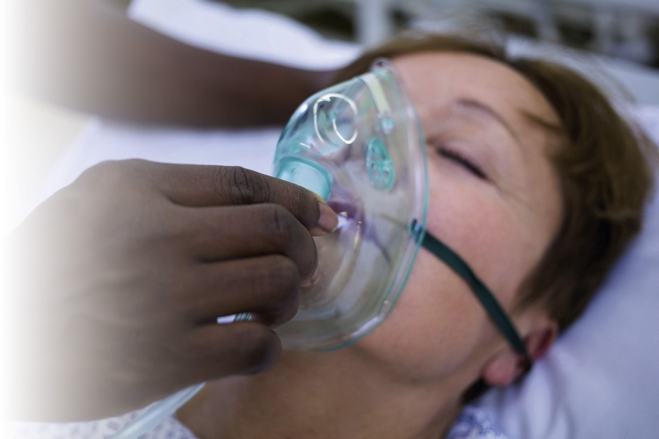
After reading this chapter, the learner should be able to do the following (完成本章学习后，学习者应能够做到以下各项)：
More and more hospitals are now employing support workers to provide basic bedside care to clients and to assist the health care team. In many municipalities, support workers are now being hired to assist acute-care health care teams for hospitalized clients. This chapter focuses on supporting the client during acute-care transitions, assisting with physical examinations, supporting the client having surgery, and how to assist in an emergency situation. In some provinces and territories, hospitalized people are called “patients,” while in other provinces, they are referred to as “clients.” For consistency, we have used the term clients.
越来越多的医院正在聘用支持人员为客户提供基础床旁照护，并协助医疗卫生团队开展工作。在加拿大许多城市中，支持人员已被广泛引入急性期医疗团队，协助照料住院患者。本章重点阐述如何在急性期转归流程中支持客户、协助完成体格检查、为手术患者提供全程围手术期支持，以及在紧急状况下如何规范求援与配合。在部分省份和地区，住院人员被称为“患者（patients）”，而在其他省份则被称为“客户（clients）”。为保持全书统一，我们通篇采用“客户”这一称谓。
The role that support workers play and their scope of practice when caring for clients in an acute-care setting (such as a hospital) differ somewhat from their roles and scope of practice in other settings (see Chapter 3). For example, there may be a need for more tasks to be delegated in an acute-care setting (BOX 46.1). Also, because acute-care clients (such as those who are undergoing investigative procedures or having surgery) can develop life-threatening health challenges quickly, it is important to observe for and immediately report changes in the client’s condition to the nursing staff. As always, it is also important to stay within your scope of practice and not attempt anything that you have not been delegated or taught to do.
支持人员在急性期医疗机构（如医院）中照护客户时所扮演的角色及其执业范畴，与在其他照护场所（如社区或长期照护机构）存在一定差异（参见第 3 章）。例如，在急性期环境中，往往需要被委派执行更多专科任务（专栏 46.1）。此外，由于急性期患者（如正在接受侵入性检查或经历手术的患者）病情变化极其迅猛，极易在短时间内发生危及生命的健康恶化，因此敏锐观察并立即向护理人员汇报患者病情的微小变化显得生死攸关。与以往一样，严格恪守执业范畴、绝不擅自尝试任何未经正式委派或未受专业培训的操作，始终是铁的纪律。
In acute care, nurses may delegate tasks that are not typically performed by support workers in home care or long-term care settings. Examples may include obtaining specific vital sign sequences, performing simple nonsterile dressing changes, applying sequential compression devices (SCDs), or assisting with complex bedside clinical procedures. Always adhere to the Five Rights of Delegation: the right task, the right circumstances, the right person, the right directions and communication, and the right supervision and evaluation.
在急性期医院环境中，护士可能会委派一些在居家养老或长期照护机构中通常不属于支持人员常规职责的医疗相关任务。例如：按特定频次采集生命体征序列、执行简单的无菌敷料更换、应用下肢间歇充气加压泵（SCDs），或协助床旁复杂临床操作。在执行前必须严格遵循委派五大正确原则：正确的任务、正确的情境、正确的人员、正确的指导与沟通、正确的监督与评估。
Clients often need to move from one environment to another—for example, into a facility (admission) or out of a facility (discharge) or from one room or unit in a facility to another (transfer). Transitions are difficult for most people. Do you remember how you felt the last time you moved? You might have felt sad if you had to leave friends and family behind, you might have felt strange and disoriented (out of place) in your new environment, or you might have felt worried about how you would adjust. Clients facing transitions in a healthcare facility often experience these same powerful emotions.
客户经常需要从一个环境迁往另一个新环境——例如，进入医疗机构办理接收（入院 Admission）、离开机构办理离院（出院 Discharge），或者在机构内部从一个房间/病区迁往另一病区（转科 Transfer）。对绝大多数人而言，环境转换都是充满压力的过程。你是否还记得上一次搬家时的切身感受？当你不得不告别亲朋好友时，内心可能会感到悲伤与留恋；身处全然陌生的新居时，会感到茫然无措与无所适从；你甚至会为自己能否适应新生活而深感担忧与焦虑。在医疗机构中经历转归变迁的患者，所承受的正是这种强烈而复杂的心理冲击。
| Term 术语 | Definition 定义与临床释义 |
|---|---|
| admission入院 / 入机构手续 | Official entry of a client into a hospital or other health care facility. p. 1089 客户正式进入医院或其他医疗护理机构办理接收的官方程序。 |
| anaesthesia麻醉 | The loss of feeling or sensation, produced by a medication that blocks pain impulses to the brain. p. 1103 通过阻断向大脑传递疼痛神经冲动的药物所产生的知觉或感觉丧失状态。 |
| discharge出院 / 离院手续 | Official departure of a client from a hospital or other health care facility. p. 1090 客户正式离开医院或其他医疗保健机构的官方离院程序。 |
| elective surgery择期手术 | Surgery that is scheduled but nonurgent. p. 1097 预先安排且非急迫的手术，延期进行不会直接危及生命。 |
| embolus栓子 | An air bubble, blood clot (thrombus), or fat clot that travels through the vascular system until it lodges in a distant vessel. p. 1105 在血管系统中游走并在远处血管发生嵌塞的气泡、血凝块（血栓）或脂肪颗粒。 |
| emergency surgery急诊手术 | Surgery that must be done immediately to save a client’s life or prevent permanent disability. p. 1103 为挽救生命或防止永久性伤残而必须立即实施的抢救性手术。 |
| general anaesthesia全身麻醉 | Unconsciousness and the loss of feeling or sensation produced by a medication. p. 1103 由麻醉药物引起的意识丧失以及全身知觉与痛觉的完全消失。 |
| laryngeal mirror喉镜 / 间接喉镜 | An instrument used to examine the mouth, teeth, and throat. p. 1093 用于检查口腔、牙齿及咽喉部位的带柄小圆镜反射器械。 |
| lithotomy position膀胱截石位 | A back-lying position in which the hips are brought down to the edge of the examination table, the knees are flexed, the hips are externally rotated, and the feet are supported in stirrups. p. 1094 仰卧位，臀部移至检查台边缘，屈膝、双髋外展外旋，双足支撑于脚蹬（脚架）上的体位。 |
| local anaesthesia局部麻醉 | The loss of sensation in a small area, produced by a medication injected at the specific site or by a topical application. p. 1103 通过特定部位注射或局部涂抹药物所产生的局限小区域感觉丧失。 |
| nasal speculum前鼻镜 / 鼻窥器 | An instrument used to examine the inside of the nose. p. 1093 用于撑开鼻孔以检查鼻腔内部结构的器械。 |
| ophthalmoscope检眼镜 / 眼底镜 | A lighted instrument used to examine the internal structures of the eye. p. 1092 带有光源、用于检查眼球内部结构（如视网膜、视神经乳头）的光学器械。 |
| otoscope检耳镜 / 耳镜 | A lighted instrument used to examine the external ear and the eardrum (tympanic membrane). p. 1092 带有光源、用于检查外耳道和鼓膜的窥视器械。 |
| percussion hammer叩诊锤 | An instrument used to tap body parts to test reflexes. Also known as reflex hammer. p. 1092 用于敲击身体特定肌腱部位以测试神经反射的橡胶锤，亦称反射锤。 |
| postoperative术后（期） | After surgery. p. 1103 手术结束之后的恢复时期。 |
| preoperative术前（期） | Before surgery. p. 1098 施行手术之前的准备阶段。 |
| reflex hammer反射锤 | See percussion hammer. p. 1092 参见叩诊锤。 |
| regional anaesthesia区域麻醉 / 部位麻醉 | The loss of sensation or feeling in a large area of the body, produced by the injection of a medication. p. 1103 通过神经阻滞注射药物产生的身体大面积区域知觉或痛觉阻断（如硬膜外或脊麻）。 |
| thrombus血栓 | A blood clot that forms in a blood vessel, which has the potential to become an embolus. p. 1105 在活体心血管腔内形成的血凝块，具有脱落并转变成栓子的潜在危险。 |
| tuning fork音叉 | An instrument used to test hearing. p. 1093 通过震动发音以测试气导与骨导听力功能的金属器械。 |
| urgent surgery限期手术 / 紧急手术 | Surgery that must be done soon to prevent further damage, disability, or disease. p. 1097 为防止进一步组织损伤、伤残或疾病恶化而必须在短时间内实施的手术。 |
| vaginal speculum阴道窥器 / 鸭嘴器 | An instrument used to open the vagina so that it and the cervix can be examined. p. 1092 用于撑开阴道壁以便全面直视检查阴道黏膜及宫颈形态的双叶窥器。 |
Admission is the official entry of a person into a healthcare facility. The admission process usually begins in the admitting department (admitting office). Admitting personnel obtain necessary demographic and financial information, obtain signatures on consent forms, and issue an identification (ID) bracelet. Once the admitting paperwork is complete, the client is taken to the nursing unit, where the client is greeted by the nursing staff.
入院（Admission）是指一个人正式进入医疗保健机构的法定登记程序。入院流程通常始于入院接待处（入院办公室）。接待人员负责采集必需的人口学与医保财务信息、签署知情同意书，并佩戴患者身份识别腕带（ID bracelet）。办妥纸质或电子登记手续后，工作人员将客户护送至相应病区，由病区护理团队正式接诊问候。
The client’s room should be prepared before the client arrives on the nursing unit. In a hospital, the bed is usually left in the open position (the top linens are fanfolded to the foot of the bed) if the client arrives by wheelchair, or the linens may be fanfolded to the side if the client arrives on a stretcher. Ensure that the room is clean, warm, well-ventilated, and adequately lit. Place personal care items (washbasin, emesis basin, bedpan or urinal, water pitcher and cup, tissues) on the bedside stand or overbed table according to facility policy.
病区在迎接新客户到来之前，必须提前彻底整理好病室。在医院中，如果客户乘轮椅抵达，病床通常整理为开敞式（将盖被呈扇形折叠至床尾）；若乘平车平卧抵达，则将盖被扇形折叠至远离推车的一侧床缘。确保病室整洁卫生、室温适宜、通风优良且采光充足。根据机构规范，在床头柜或过床桌上备齐个人基础护理用物（脸盆、呕吐盆、便盆或尿壶、带盖水壶水杯、纸巾等）。
The first impression is very important. When the client arrives, greet the client warmly and politely by name (e.g., “Good morning, Mrs. Janz. Welcome to 4-East. My name is Sarah, and I am the support worker caring for you today”). Introduce yourself and explain your role. Greet family members or friends who are accompanying the client (FIGURE 46.1). Call the client by name in the proper manner and lead the way to the client’s room. Remember that the client and family may be feeling anxious, so be friendly and gentle, and do not rush them. See Providing Compassionate Care: Welcoming a Newly Admitted Client, on page 1091.
第一印象对建立医患信任至关重要。当客户抵达病区时，应亲切而礼貌地直呼其姓名进行问候（例如：“早上好，简茨夫人。欢迎来到东四病区。我是萨拉，是今天负责协助照护您的支持人员”）。主动做自我介绍并清晰解释自己的工作角色。礼貌问候陪伴在侧的家属或亲友（图 46.1）。以得体尊重的称谓称呼客户，引导其进入病室。切记客户和家属此时可能处于极度焦虑之中，因此态度务必友善、温和，行动切勿匆忙催促。详见第 1091 页专栏《提供人文关怀：迎接新入院客户》。
Once in the room, help the client undress and put on a hospital gown or personal nightwear if the client is to be in bed, or assist them into a comfortable armchair. Assist the client with unpacking and storing clothing and personal items. Inventory personal belongings according to facility policy. Inspect clothing, jewellery, money, dentures, eyeglasses, and assistive devices, and record them on the personal belongings list. Have the client or family sign the inventory sheet, or send high-value items home with family members whenever possible.
进入病室后，若患者需要卧床休息，协助其脱下外衣换上病员服或自带睡衣；若允许下床，则协助其在舒适的靠背椅上就座。协助整理行李并将衣物及个人洗漱用具放入衣柜或床头柜。严格按照机构制度清点登记个人财物。核对衣物、首饰、现金、假牙、眼镜及助听器等辅具，如实记录在个人财产登记单上。请客户或随行家属签字确认，或在征得同意后建议家属将贵重金银现金带回家中妥善保管。
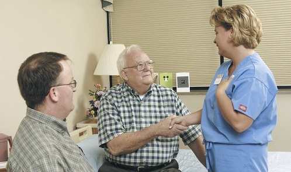
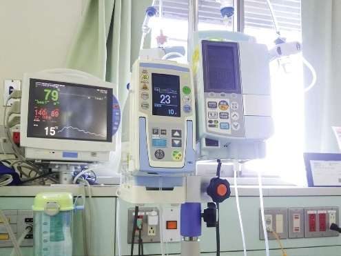
The hospital bed unit is designed to provide safety, comfort, and specialized medical support for acute-care clients. Modern acute-care hospital rooms often contain complex, wall-mounted medical equipment such as oxygen outlets, medical air, and suction (FIGURE 46.2) that are ready for immediate use when required. Oxygen tanks, oxygen concentrators, and portable suction equipment, all of which are also common in long-term care and home care settings, may also be present. Because medical equipment is expensive and easily broken, only medically necessary items should be placed at the bedside. Support workers must be familiar with the operation of hospital beds (electric controls for head, knee, and overall bed height), IV poles, and call bell systems.
医院病床单元的设计旨在为急性期患者提供全方位的安全防护、生理舒适以及专科医疗监护支持。现代急性期病房的床头墙壁通常集成了复杂的嵌入式医疗设施，如吸氧管道接口、医用压缩空气以及负压吸引阀门（图 46.2），以便在紧急抢救时随时调用。在长期照护和居家护理中常见的氧气瓶、制氧机及便携式吸引装置在医院也可能配备。由于医疗精密仪器造价昂贵且极易受损，床旁仅应放置医疗必需设备。支持人员必须熟练掌握多功能电动病床（床头抬升、膝下屈曲及整体高度升降控制器）、移动式输液架以及呼叫铃系统的标准操作。
Orient the client to the room, unit, and facility. Show the client how to use the call bell, and emphasize that it must be kept within easy reach at all times. Explain how to operate the bed controls, the overbed table, the television, and the telephone. Show the client the bathroom and explain the emergency pull cord inside the bathroom. Introduce the client to their roommate if the room is semiprivate or a ward. Inform the client about mealtimes, visiting hours, and facility routines. Taking time to orient the client prevents confusion, reduces anxiety, and enhances client safety.
向客户全面介绍病室、病区乃至全院的核心环境设施。向客户演示呼叫铃的使用方法，并郑重强调呼叫铃必须始终置于其触手可及之处。指导客户如何操作电动床控制面板、调节过床桌、使用电视及床旁电话。带领客户参观卫生间，并重点解释卫生间内的紧急呼叫拉绳。如果入住的是双人病房（半私密）或多人大病房，应向同室室友进行友好引荐。告知每日三餐送餐时间、家属探视规定及病区作息制度。耐心细致的环境宣教能有效消除客户的迷茫不安、减轻心理恐惧，并从根本上预防跌倒等意外安全事故。
A transfer occurs when a client is moved from one room, unit, or department to another within the same healthcare facility. Transfers are usually related to changes in a client’s condition. For example, a client who becomes critically ill may be transferred from a medical-surgical unit to an intensive care unit (ICU). Conversely, a client whose condition improves may be transferred from the ICU to a step-down unit or regular inpatient unit. Transfers may also be done at the client’s request (e.g., requesting a private room) or to accommodate facility operational needs.
转科（Transfer）是指客户在同一医疗机构内部，从一个病房、病区或专科部门搬迁至另一处。转科通常与患者病情的重大演变直接相关。例如，当内外科普通病房的患者病情急剧恶化时，需要紧急转入重症监护室（ICU）；反之，当危重患者病情平稳好转后，则会从 ICU 转出至过渡病区（亚重症病区）或普通病房。此外，转科也可能应客户个人愿望发起（如申请入住单人私密病房），或为了配合医院整体床位统筹调配。
Transfers can cause anxiety and distress because the client must leave familiar staff and surroundings to adapt to a new care environment. Support workers help reduce stress by explaining the reasons for the transfer, gathering and packing all personal belongings carefully, and ensuring that all medical records, charts, and medications accompany the client as directed by the nurse. Transport the client safely by wheelchair or stretcher. Upon arrival at the receiving unit, introduce the client to the new nursing staff, assist in settling the client into bed, and report any relevant observations to the receiving team.
转科往往会引发患者的恐惧与焦虑，因为他们不得不离开刚刚熟悉的医护面孔与周边环境，重新适应陌生的照护团队。支持人员可通过耐心地向其解释转科目的与必要性、妥善整理打包所有随身私人物品，并在责任护士指导下确保病历资料与专科药械完好随行来有效减轻心理应激。协助患者安全搭乘轮椅或平车转运。到达接收科室后，主动向新病区的护士介绍客户，协助将客户安顿在病床上并连接监护设施，最后向接收团队简明汇报转运途中的观察所见。
Discharge is the official departure of a client from a hospital or other healthcare facility. Discharge is a planned, multi-step process. A nurse or social worker usually coordinates discharge planning, but only a physician has the legal authority to write a discharge order. If a client insists on leaving the facility without a physician’s order, notify the nurse immediately; this is known as leaving against medical advice (AMA).
出院（Discharge）是指客户正式办结手续离开医院或其他医疗机构的法定离院程序。出院是一个严密计划、多方协作的系统化过程。出院计划通常由专职责任护士或临床社工统筹协调，但唯有具备处方权的执业医生才拥有下达出院官方医嘱的法定权力。若客户在医生未下达医嘱的情况下执意强行离开医院，必须立即通报护士；在临床上这被称为“违背医疗建议擅自离院（Against Medical Advice, AMA）”。
As a support worker, your duties during discharge include: assisting the client with dressing in street clothes, gathering and packing all personal possessions (checking drawers, closet, and bathroom thoroughly to ensure nothing is left behind), comparing belongings against the initial admission inventory list, and obtaining any stored valuables from the facility safe. The nurse provides written discharge instructions, reviews medications, and completes client teaching. Assist the client into a wheelchair, transport the client to the designated pickup area, assist the client into the vehicle safely, and report the time and manner of departure to the nurse.
作为支持人员，你在出院环节的核心职责包括：协助客户换好便服；全面清点并打包所有随身物品（务必彻底检查床头抽屉、衣柜、卫生间洗漱台，确保无任何遗漏）；将物品与入院初期的财产清单逐项核对；并在护士协助下从机构保险库取回代管的贵重物品交给客户。责任护士负责交代书面出院医嘱、宣教出院带药并指导康复随访。支持人员协助客户平稳坐上轮椅，平稳护送至医院指定的乘车出发区，小心搀扶协助客户安全上车，最后向病区护士汇报客户离院的确切时间、陪同家属及交通方式。
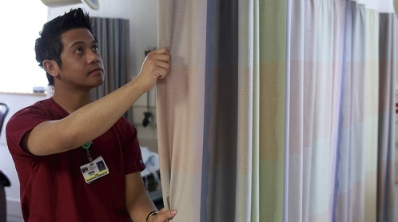
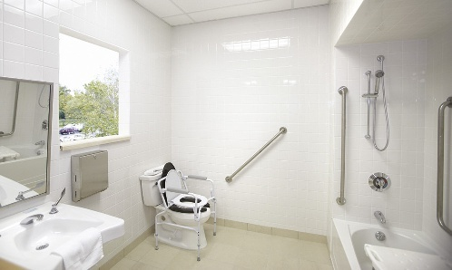
Physicians and registered nurses perform physical examinations to promote health, determine the client’s physical and mental status, detect early signs of disease, and monitor existing illnesses or medical treatments. Physical examinations are performed in doctors’ offices, clinics, acute-care hospitals, and long-term care facilities (where annual physical examinations are often mandated by provincial regulations). Pre-employment physicals may also take place in a physician’s office or occupational health clinic.
医生和注册护士通过执行体格检查来促进整体健康、评估客户的身心机能状态、早期筛查疾病隐患，并持续监测现有疾病的进展或评估医疗干预效果。体格检查可在医师诊所、门诊部、急性期医院病房以及长期照护机构中进行（在长期照护机构中，各省法规通常强制要求新入院客户及在院居民每年接受全身体检）。此外，入职前体检也常在医生诊所或职业健康门诊部开展。
Instruments needed for a physical examination may include, but are not limited to, the following (FIGURE 46.5):
体格检查所需的医疗器械可能包括但不限于以下专业诊断工具（图 46.5）：
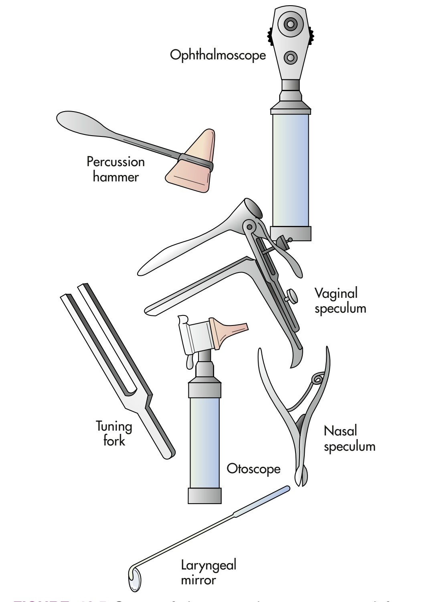
Preparing the client physically and psychologically promotes comfort, reduces apprehension, and facilitates a smooth, dignified examination. Prior to the examination:
从生理与心理双重层面协助受检者做好准备，不仅能提升体检舒适度、驱散恐惧顾虑，更能保证检查过程顺利、严谨且充满尊严。在检查开始之前：
The client is positioned and draped according to the body part being examined. Correct draping prevents unnecessary body exposure, maintains professional boundaries, and keeps the client warm. An extra bath blanket should be kept available to prevent chilling (FIGURE 46.6).
根据所要检查的具体身体部位，协助客户采取特定体检体位并施以规范遮盖。严谨正确的遮盖能够彻底杜绝不必要的身体暴露、维护专业职业界限，并保持机体温暖。床头应常备一条保暖大浴毯以防患者受凉（图 46.6）。
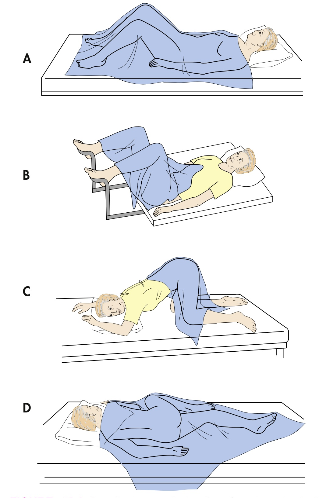
Depending on your employer's policies, your province or territory, and the examiner’s preference, your role during the physical examination may include:
依据所在机构规程、所在省或地区的监管法规以及检查医师的个人操作习惯，支持人员在体检过程中的核心协助职责包括：
In many healthcare jurisdictions, having a third person present (a chaperone) during sensitive examinations—particularly breast, genital, pelvic, or rectal exams—is a mandatory professional standard. As a support worker, acting as a chaperone protects the client from inappropriate conduct and feelings of vulnerability, while also protecting the examiner against false allegations of misconduct.
在许多医疗司法管辖区，在对患者执行涉及隐私的敏感体检时（尤其是乳房视触诊、外生殖器、妇科盆腔内诊或肛门直肠指诊），必须有第三人在场（陪检员 Chaperone），这已成为强制性行业执业标准。支持人员作为陪检员在场，既能保护受检者免遭不当行为侵害并减轻其无助脆弱感，同时也是保护检查医师免受不实执业操守指控的重要法律盾牌。
When the examination is concluded, help the client into a comfortable resting position or assist them to dress in street clothes. Provide tissues to wipe away excess lubricant or secretions from perineal and rectal regions. Clean and store reusable instruments according to standard infection control protocols. Label collected laboratory specimens (swabs, biopsies, cytological smears) immediately in the client's presence with full client name, health record number, date, time, and specimen source. Place specimens in biohazard transport bags for delivery to the laboratory.
体检全部结束之后，协助客户调整至舒适的平卧或半卧体位，或协助其脱下检查袍换好日常衣物。递送清洁纸巾以便客户擦净会阴部或肛周残留的润滑剂与分泌物。根据标准感控流程清洗、消毒并归放复用医疗器械。当着客户的面立即在采集的检验标本容器上（拭子、活检组织瓶、细胞学涂片）精确张贴标签，注明患者完整姓名、住院病历号、采集日期、确切时间及标本解剖来源。将标本放入防泄漏生物危害袋中，及时送检化验室。
Discard disposable paper table covers, disposable drapes, and wooden spatulas in designated waste containers. Disinfect the examination table mattress and all touched surfaces with hospital-grade disinfectant wipes. Restock supplies (cotton applicators, table paper rolls, gloves) so the examination room is immediately ready for the next client. Wash your hands thoroughly.
将一次性检查床卷纸、一次性垫单及木质压舌板投入指定医疗废物桶。使用医院级消毒湿巾彻底擦拭消毒检查台垫面及所有被触碰过的表面。及时补充耗材（棉签、床单卷纸、医用手套等），确保检查室迅速恢复整备状态以迎接下一位患者。最后严格执行流动水洗手。
A parent or guardian must be present during examinations of infants, toddlers, preschool children, and school-aged children. The presence of a parent provides immense security and minimizes separation anxiety. Children may sit on a parent’s lap during examination of the ears, throat, or chest. Allow young children to handle safe instruments (like the reflex hammer or stethoscope) to demystify the equipment. Never use harsh restraint; praise cooperation warmly.
在对婴儿、幼儿、学龄前儿童及学龄期儿童进行体格检查时，必须有父母或法定监护人全程在场。亲人的陪伴能赋予患儿极大的安全感，将分离焦虑降至最低。在检查耳朵、咽喉或胸部听诊时，可允许幼儿坐在父母膝盖上接受检查。可允许幼童触摸把玩无害的安全器械（如反射锤或听诊器胸件）以消除对神秘仪器的恐惧。严禁采取粗暴强行约束；对孩子的任何配合均应给予热情的表扬与肯定。
Surgery is the branch of medicine that treats disease, injuries, and deformities by manual and operative methods. Millions of surgeries are performed annually in Canada. Surgery may be done to save life, cure disease (such as removing a tumour), relieve symptoms (palliative surgery), restore function, or alter physical appearance (cosmetic surgery). The surgical experience is divided into three distinct phases:
外科学（Surgery）是通过外科医师手法及器械切开手术来治疗疾病、创伤及畸形的医学分支。在加拿大，每年实施数百万台各类外科手术。手术的目的可以是抢救濒危生命、根治恶性疾病（如切除恶性肿瘤）、缓解晚期症状（姑息性手术）、重建机体功能（如关节置换），抑或改善外貌外观（整形美容手术）。整个外科手术体验在临床上被严密划分为三个连续阶段：
Surgeries may be classified as elective, urgent, or emergency depending on the timing and urgency:
根据手术实施的时效紧迫性与威胁生命的程度，临床将手术划分为三大类别：
Surgery is a stressful life event that triggers anxiety and fear in almost all clients. As surgery approaches, emotional concerns can intensify dramatically. Clients may experience deep-seated fears regarding:
外科手术是一项重大的应激生活事件，几乎在所有患者心中都会诱发不同程度的强烈焦虑与恐惧。随着手术时刻的临近，患者内心的情绪波动往往呈进行性加剧。患者通常会经历以下深层身心恐惧：
Support workers play an essential role in reducing preoperative tension through therapeutic presence. Practice active listening—allow clients to voice their fears without interruption or dismissive false reassurances (never say “Don’t worry, you’ll be fine”). Report all client fears, questions regarding surgical procedure risks, or religious/cultural requests to the nurse immediately. Respect spiritual practices, and offer to contact spiritual care services if desired.
支持人员通过真诚共情的床旁陪伴，在缓解术前心理紧张中发挥着不可替代的作用。践行积极倾听——允许患者畅所欲言宣泄恐惧，切勿粗暴打断，严禁使用轻浮虚假的安慰性套话（绝对不能说“别担心，一点事都没有”）。一旦患者表达对死亡的恐惧、询问具体手术医疗风险，或提出宗教信仰诉求，必须立即如实报告责任护士。充分尊重患者的宗教习俗与灵性照护需求，在患者需要时协助联系院内宗教灵性服务团队。
Nurses provide structured preoperative teaching before surgery so that clients know what to expect and how to participate actively in their recovery. Teaching includes:
责任护士在手术前会组织系统化的术前健康宣教，使患者充分明晰围手术期所要经历的各个环节，并在术后积极主动地配合自我康复。宣教核心内容包括：
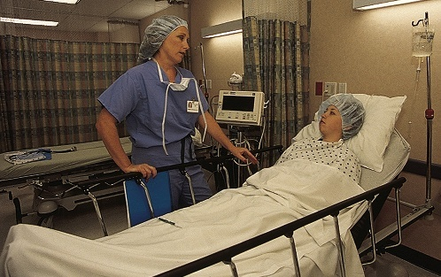
The postanaesthesia care unit (PACU), also known as the recovery room (FIGURE 46.7), is where the client is taken immediately following surgery. In the PACU, specially trained recovery nurses closely monitor airway patency, oxygen saturation, vital signs, surgical dressings, drainage tubes, and level of consciousness. Clients are explained that when they first wake up, they may feel groggy, disoriented, cold, or experience shivering, and that oxygen masks or nasal prongs will be in place.
麻醉恢复室（Postanaesthesia Care Unit, PACU），通常亦称为恢复室（Recovery room，图 46.7），是外科手术结束后患者被立即转入接受复苏监护的高精尖重症单元。在 PACU 中，受过高级重症复苏训练的专科护士会秒级严密监测患者的气道通畅度、经皮血氧饱和度、核心生命体征、切口敷料渗血情况、各类引流管道引流量以及意识苏醒分级。在术前应向患者提前解释：初次苏醒时可能会感到极度困倦、定向力短暂模糊、周身寒战或颤抖，且脸上会佩戴吸氧面罩或鼻导管，这些均为正常恢复表现。
Physical preparation ensures the client's body is physically ready to endure the physiological stresses of anaesthesia and surgery, minimizing intraoperative and postoperative complications.
严格的术前生理准备旨在确保患者各机体系统达到耐受麻醉药物与外科手术创伤的最佳生理耐受状态，将术中与术后危急并发症发生率降至最低。
On the morning of surgery, support workers assist with a series of critical preparatory tasks:
在手术日清晨，支持人员需协助落实一系列至关重要的细节准备规范：
A standardized preoperative checklist (FIGURE 46.8) is attached to the front of the client’s medical chart. The nurse systematically verifies and checks off each mandatory safety item—including signed operative consents, NPO verification, vital sign recording, removal of valuables and dentures, skin prep verification, and medication administration. Only when every single item on the checklist is signed off is the client considered legally and medically ready for transfer to the surgical suite.
一份标准化的术前安全核对清单（图 46.8）被固定张贴在患者纸质病历首页或电子病历顶栏。病区责任护士会严格对照清单逐项核查确认——包括知情同意书签字齐备、严格 NPO 状态核对、末次生命体征记录、义齿与贵重物品清空交接、皮肤准备达标以及术前药给药无误。唯有当清单上所有核心项目逐条确认并签署护士签名后，该患者在法律和医疗程序上才被认定具备转送手术室的标准资格。
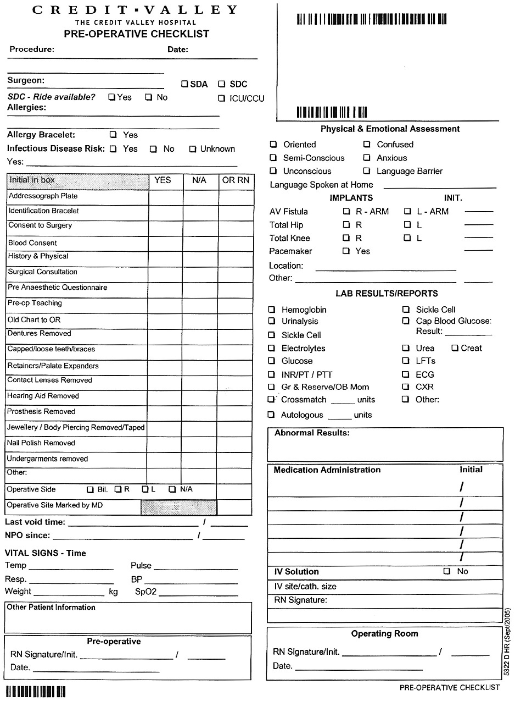
The preoperative checklist serves as a vital communication tool between the inpatient nursing unit, operating room transfer personnel, and surgical suite nurses. When the OR transport staff arrives to transfer the client, the unit nurse and the transport staff perform a strict dual-identifier verification (checking the client's ID bracelet against the chart and asking the client to state their full legal name and date of birth) before signing the checklist transfer release.
术前核对清单是病区护理团队、手术转运接送人员以及手术室巡回护士之间核心的信息交接桥梁。当手术室转运人员抵达病房交接患者时，病房护士与转运专员必须协同执行极其严苛的双重身份识别查对（对照病历腕带、请清醒患者亲口报出全名与出生年月日），在双方共同在核对清单交接栏签署工号与时间后，方准执行平车推移离区。
Immediately prior to most surgical procedures, the client is given an anaesthetic. Anaesthesia is the loss of feeling or sensation produced by a medication that blocks pain impulses to the brain. There are three main types of anaesthesia:
在绝大多数外科手术操作开始之前，麻醉医师会为患者施用麻醉药物。麻醉（Anaesthesia）是指通过药物特异性阻断向中枢神经大脑传导的疼痛神经冲动，从而引起的暂时性知觉或感觉丧失状态。临床主要划分为三大麻醉类型：
While the client is in surgery, the support worker prepares the client’s room for their return. Prepare a surgical bed (recovery bed): make the bed with clean linens, fanfolding the top linens to the side of the bed opposite the door or to the foot of the bed to allow easy transfer of the client from the stretcher. Raise the bed to the height of the transport stretcher. Equipment to assemble at the bedside includes: an IV pole, functioning suction canisters and tubing, wall oxygen regulator with nasal cannula or mask, emesis basin and paper tissues, vital signs diagnostic equipment (sphygmomanometer, pulse oximeter, thermometer), intake/output (I&O) record sheet, and extra warm blankets.
当患者在手术室接受手术期间，病房支持人员应迅速将病房终末整理好，以迎接患者安全返回。铺设专科麻醉手术床（恢复床）：换上洁净纯棉床单，将盖被呈扇形平展折叠至远离病房房门的一侧床沿（或床尾），以便于平车平推贴近后将患者平稳移上病床。将病床整体高度电动升高至与手术转运平车完全一致的水平面上。在床旁备齐以下专科抢救与监护耗材：移动输液架、负压吸引压力调节阀与连接吸引管、壁式氧气流量计配鼻导管或吸氧面罩、医用弯盘（呕吐盆）与清洁纸巾、生命体征采集仪（血压计、指脉氧饱和度探头、电子体温计）、出入液量（I&O）专用记录单以及预热的保暖加厚毛毯。
When the client is stable and meets strict discharge criteria in the PACU, the client is transferred back to the surgical nursing unit. The PACU nurse gives a comprehensive bedside verbal report to the receiving unit nurse regarding the surgical procedure, types of anaesthesia given, total blood loss, IV fluids administered, medications given, drain outputs, and any intraoperative complications.
当患者生命体征平稳、完全达到 PACU 严苛的苏醒出室评分标准后，由专职人员护送返回外科病房。PACU 护士在床旁向病房接诊责任护士进行详尽的面对面交接班，内容涵盖：具体实施的手术名称、所用麻醉剂型、术中估计总出血量、补液量与输血量、镇痛与止吐药物使用情况、手术切口引流管通畅度及术中有无突发并发症等。
The client is moved gently and carefully from the transport stretcher onto the prepared surgical bed using a slide board or transfer sheet, with at least two or three staff members assisting to protect the incision and prevent strain on lines and catheters. Position the client comfortably according to specific postoperative orders (e.g., flat with head turned to one side if unconscious or semirecumbent if awake and stable). Connect oxygen, ensure IV lines are infusing properly without tension, attach drainage bags below bed level, place the call bell in the client's hand, and position the emesis basin nearby.
由至少两至三名医护照护人员协同配合，使用过床滑板或中单将患者从转运平车平稳轻柔地平移至预先铺设好的麻醉床上，杜绝过度牵拉手术创口或撕脱各类输液导管及引流管。严格依照术后体位医嘱安置患者（如未完全清醒者去枕平卧、头偏向一侧以防呕吐窒息；完全清醒且血压平稳者取半卧位）。立即连接鼻导管吸氧、检查静脉输液管路通畅无张力扭曲、将尿袋及引流袋垂挂固定于床架低于膀胱水平面、将呼叫铃手柄塞入患者手中，并在头旁备好呕吐弯盘与纸巾。
Vital signs are monitored frequently postoperatively to detect early hemodynamic changes or respiratory depression. A typical standard hospital vital sign protocol is:
术后必须按高频时间梯度严密监测生命体征，以便早期捕捉血流动力学紊乱或麻醉药物残留引起的呼吸抑制。医院常规标准监测时间表如下：
Respiratory complications are common and potentially life-threatening during the postoperative period. Two major complications must be aggressively prevented: (1) atelectasis (the collapse of a portion of the lung or alveoli), and (2) pneumonia (an inflammation and infection in the lung tissues caused by pooled secretions). Because anaesthetic agents irritate the respiratory mucosa, reduce ciliary motion, and decrease the depth of breathing, and because surgical pain discourages the client from taking deep breaths, mucus accumulates rapidly in the bronchi.
在术后恢复期，呼吸道并发症极为多见且具有潜在的致命性。临床必须积极预防两大核心并发症：(1) 肺不张（Atelectasis）（部分肺叶肺泡萎陷萎缩失去通气功能）；(2) 肺炎（Pneumonia）（呼吸道积聚分泌物继发细菌感染引起的肺组织炎性实变）。由于吸入麻醉药物直接刺激呼吸道黏膜、削弱纤毛摆动清除功能并抑制呼吸中枢深度，加之术后切口刀割样剧痛使患者不敢用力深呼吸，大量黏稠痰液极易在细支气管内淤积阻塞。
Coughing and deep-breathing exercises: The client is instructed to perform deep breathing and coughing exercises every 1 to 2 hours while awake. The client takes a deep breath in through the nose, holds it for 3 to 5 seconds, and exhales slowly through pursed lips, repeating 3 to 5 times. On the final exhalation, the client coughs forcefully twice from the chest. Splinting the incision: To make coughing tolerable, show the client how to splint the surgical incision by holding a pillow or folded blanket firmly over the incision area. This counter-pressure significantly reduces tension on sutures and decreases sharp pain.
深呼吸与有效咳嗽锻炼：指导患者在清醒状态下每 1 至 2 小时进行一次深呼吸与咳嗽锻炼。患者经鼻腔做深长吸气，屏气 3 至 5 秒钟，随后经缩唇缓慢呼出，重复 3 至 5 次。在最后一次呼气末，自胸腹深部爆发性用力剧咳两次以排出痰栓。切口按压固定法（Splinting）：为了使咳嗽得以耐受，指导患者用双手紧抱枕头或折叠毛毯，牢牢压紧手术切口部位。这种对抗压力能极大化解腹壁缝线张力，将撕裂样锐痛减轻大半。
After surgery, blood flow in the lower extremities can become extremely sluggish due to prolonged bed rest, muscle relaxation during anaesthesia, and pressure on leg veins from surgical positioning. Sluggish venous flow promotes the formation of a thrombus—a blood clot attached to the inner wall of a vein, most commonly in the deep veins of the calf or thigh (deep vein thrombosis, DVT) (FIGURE 46.9, A).
外科手术后，由于长时间卧床制动、麻醉导致的肌肉完全松弛失去肌泵挤压作用，以及手术体位对腘静脉及小腿血管的持续受压，下肢静脉血液流动会变得极其迟缓滞涩。滞缓的静脉血流极易诱发血栓（Thrombus）形成——即附着于静脉管壁内膜上的血凝块，最常见于小腿或大腿深静脉（下肢深静脉血栓形成，DVT）（图 46.9，A）。
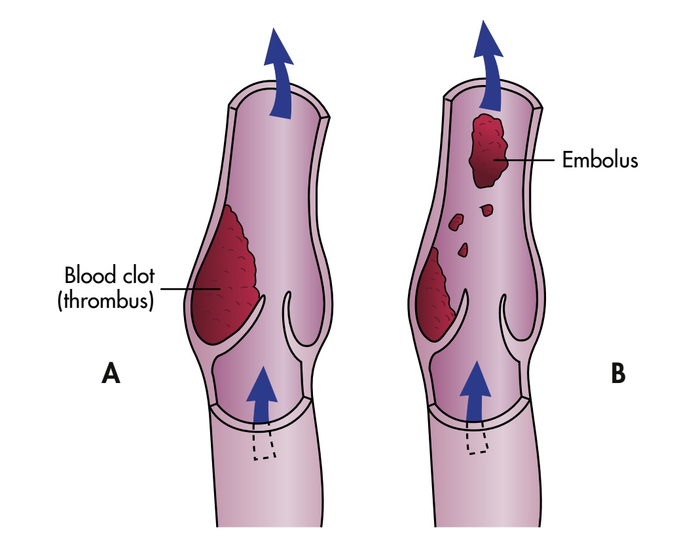
If part or all of the thrombus breaks away from the vein wall, it becomes an embolus (FIGURE 46.9, B). The embolus travels rapidly through the inferior vena cava, passes through the right atrium and right ventricle of the heart, and lodges in a pulmonary artery in the lungs—a condition called a pulmonary embolism (PE). A pulmonary embolism obstructs blood supply to lung tissue and is a catastrophic medical emergency that can cause sudden chest pain, cyanosis, acute shortness of breath, and instantaneous death.
一旦附壁血栓的一部分或整体从静脉壁脱落脱失，便转化为在血流中高速漂移的栓子（Embolus）（图 46.9，B）。栓子沿下腔静脉回流，穿过心脏右心房与右心室，最终死死嵌塞在管径逐级变细的肺动脉主干或分支血管中——这一危急病理状态称为肺动脉栓塞（Pulmonary Embolism, PE）。肺栓塞会瞬间阻断大面积肺实质的血液灌注，是一种极为险恶的急性医疗急症，可诱发突发撕裂样胸痛、发绀、极度呼吸困难，甚至在数秒内发生心搏骤停猝死。
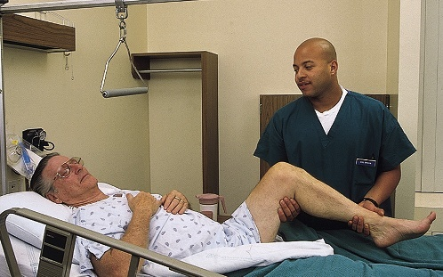
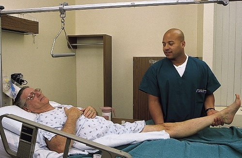
Leg exercises stimulate muscle contraction, which compresses veins and pumps blood back toward the heart, preventing venous pooling and thrombus formation. Leg exercises are performed every 1 to 2 hours while awake (FIGURES 46.10 and 46.11):
下肢功能运动通过肌肉的周期性收缩，对深层静脉产生泵压效应，强力驱动淤滞的血液向心脏回流，从根本上防止静脉血液淤积和血栓形成。患者在清醒状态下每 1 至 2 小时应进行一次锻炼（图 46.10 与图 46.11）：
Physicians frequently order antiembolism stockings (TED stockings) or sequential compression devices (SCDs). Antiembolism stockings exert graduated compression on the legs—greatest at the ankle and decreasing toward the thigh—speeding up venous blood velocity. SCDs consist of inflatable sleeves wrapped around the legs that rhythmically inflate and deflate with air from an electric pump, mimicking walking. Both elastic stockings and bandages could harm the client if applied improperly. Check skin colour and temperature of toes every 2 to 4 hours. Stockings must be removed twice daily for 30 minutes to wash the legs and inspect skin for redness or breakdown.
外科医生常会开具抗血栓弹力袜（TED 袜）或间歇充气加压装置（Sequential Compression Devices, SCDs）。抗栓弹力袜对下肢施加阶梯递减的渐进式压力——踝部压力最高，向小腿及大腿递减——从而加速静脉血流流速。SCD 则由包裹在腿部的充气套袖组成，由电动主机驱动周期性充气与放气，机械性模拟自然行走的肌泵挤压效果。若穿戴不当，弹力袜和弹力绷带都会压伤患者组织。每 2 至 4 小时必须检查一次脚趾的皮温、色泽与微循环充盈度。弹力袜每天必须脱下两次（每次约 30 分钟），以便清洁皮肤并彻底检查有无压红破损。
Pain is common after surgery. The degree of pain depends on the surgery, the incision site, and individual pain tolerance. Pain causes muscle tension and prevents the client from coughing, deep breathing, and moving freely. Nurses administer analgesics as ordered (or manage client-controlled analgesia, PCA). As a support worker, provide comfort measures: reposition the client gently at least every 2 hours, support painful extremities with pillows, ensure fresh linens, maintain a quiet, calm environment, and report complaints of pain to the nurse promptly.
疼痛是术后最常见的痛苦体验。疼痛的剧烈程度取决于手术创伤大小、切口解剖部位以及个体的耐受阈值。剧烈疼痛会导致全身骨骼肌紧绷，使患者因畏痛而抗拒深呼吸、咳嗽及翻身活动。责任护士按医嘱给药（或管理患者自控镇痛泵 PCA）。支持人员应提供全方位的非药物舒适护理：至少每 2 小时轻柔协助翻身并调整体位；用软枕妥善支撑受累肢体；保持床单平整干燥无碎屑；营造安静舒适的修养氛围；一旦患者主诉疼痛加剧，立即报告护士。
Frequent oral hygiene is critical because NPO status, anaesthesia, and anticholinergic medications cause severe dry mouth. Provide damp sponge swabs or encourage rinsing and spitting water (if allowed). Assist with a refreshing bed bath and clean gown. Postoperative diet begins with small ice chips or sips of water, progressing to clear fluids, full fluids, and a regular diet as bowel sounds return and nausea subsides. Measure and record all intake and output (I&O) meticulously.
高频次的口腔护理必不可少，因为严格的禁食禁饮、麻醉挥发气体以及抗胆碱术前药会引起极度的咽干口渴。可用湿润的海绵拭子湿润口腔黏膜，或在允许的情况下指导患者用少量清水含漱后吐出（切勿吞咽）。协助完成温水擦浴并换上干燥整洁的病服。术后饮食遵循严格阶梯推进：由少量吸吮碎冰或抿水开始，随着肠鸣音恢复和恶心消退，逐步过渡至清流质、全流质、半流质，最终恢复普通饮食。严谨精确记录每一毫升的出入液量（I&O）。
Anaesthesia, immobility, and pain medications often cause urinary retention and constipation. The surgical client should void within 6 to 8 hours after surgery. If the client does not void within this timeframe, notify the nurse immediately. Urinary catheterization or bladder ultrasound scanning may be necessary. Document the time, amount, and character of the first postoperative voiding.
麻醉肌松效应、制动卧床以及阿片类强效镇痛药物极易诱发急性尿潴留及肠麻痹便秘。外科手术患者通常必须在术后 6 至 8 小时内完成首次自主排尿。若超过此时限仍未排尿且下腹膨隆胀痛，必须立即通报护士。临床可能需要紧急行膀胱超声扫描测定残余尿量或执行无菌导尿术。详细记录术后首次排尿的精确时间、排尿量及尿液颜色性状。
Early ambulation (getting out of bed and walking) stimulates circulation, increases peristalsis (preventing gas pains and constipation), and promotes deep breathing. The client is usually ambulated the evening of surgery or the day after. Safety procedure: Have the client sit on the edge of the bed with feet dangling for several minutes before standing, watching for dizziness or pale skin (orthostatic hypotension). Never rush the client; support them with a transfer belt, and remain close at all times.
早期下床活动（Early Ambulation）能极大地加速全身血液循环、强力刺激肠道蠕动（预防肠胀气肠梗阻与顽固便秘），并促进肺实质彻底复张。根据手术医嘱，患者通常在手术日当晚或术后次日首次协助下床。核心安全规程：下床前必须让患者在床沿静坐垂腿数分钟（Dangling），严密观察面色及有无头晕黑矇（预防体位性低血压）。行动切勿急躁匆忙；系好安全移位带，支持人员全程在侧提供坚实依靠与防跌倒保护。
Circle T if the answer is true, and circle F if the answer is false (判断正误题：正确圈 T，错误圈 F)。
本章共包含 20 道官方执业认证真题（题 1–9 为正误判断题，题 10–20 为单项选择题）。完整交互试题、即时核对及权威临床精解请访问独立题库章节 第 46 章自测习题库 (#sec-ch46-quiz)。
Questions 12 to 20 focus on surgical positioning, operative preparation, NPO protocol, and postoperative recovery rules.